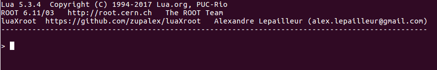
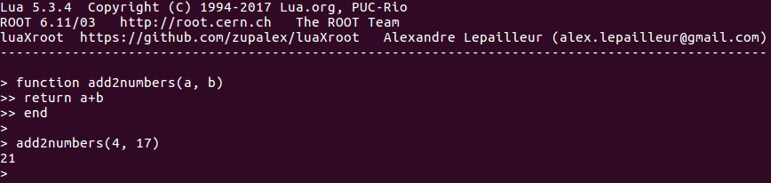
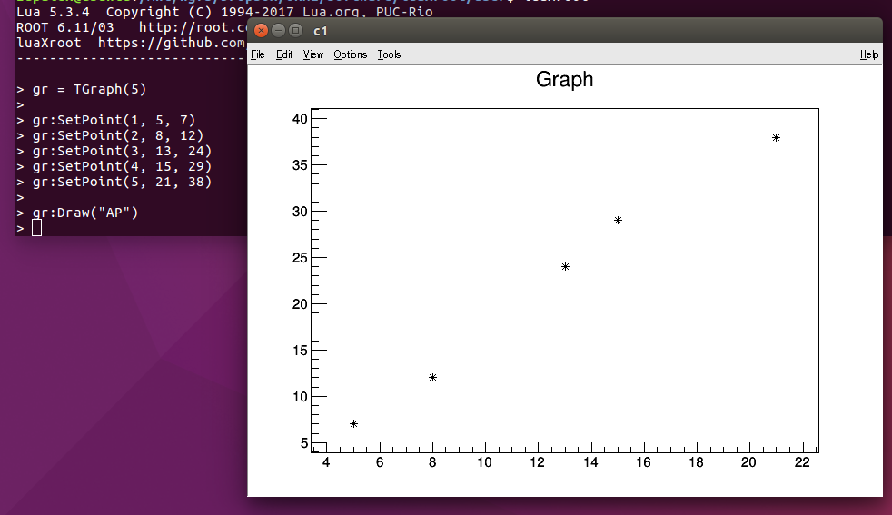
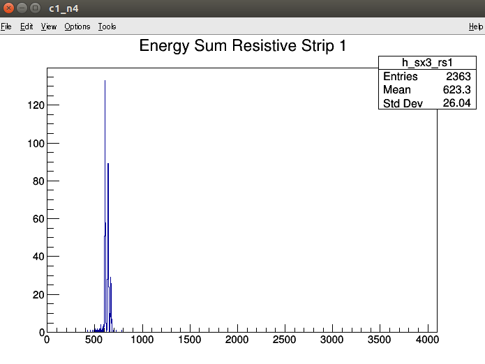
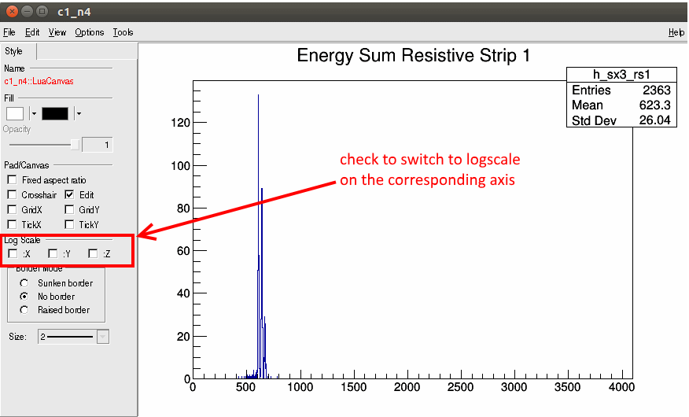
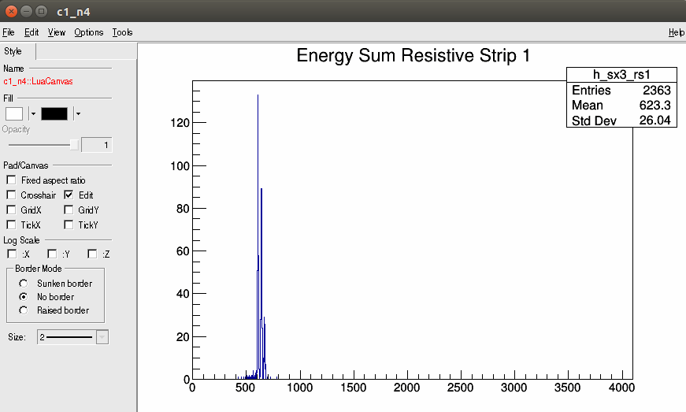
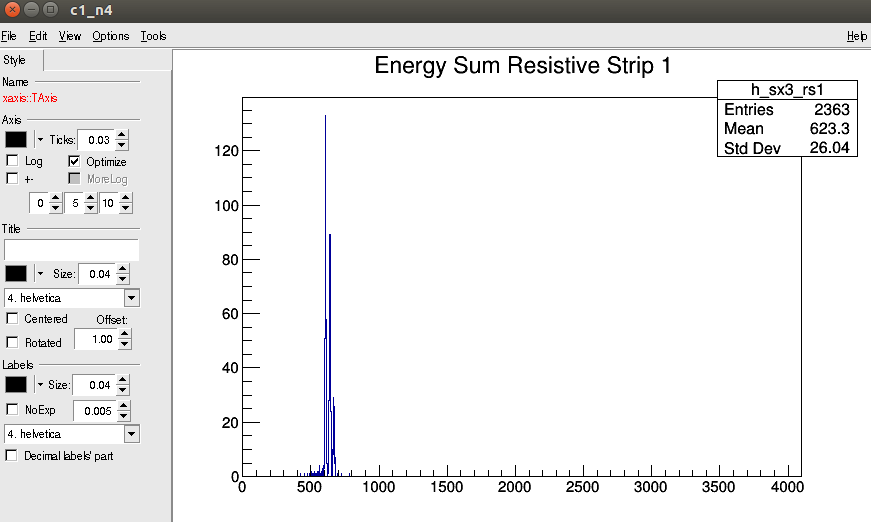
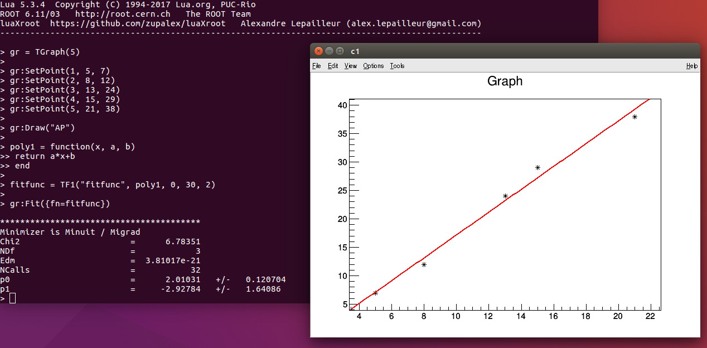
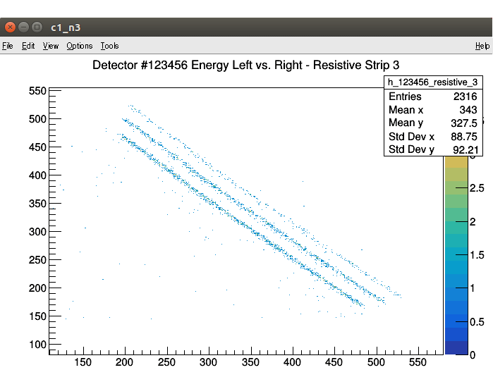

This section assume that you already have cloned, built and installed luaXroot using the instructions provided by the README.md.
Index of the Quick Start section:
The command interpreter
Loading a script
Displaying histograms and graphs
Graphical cut
Interacting with a running task
Exiting the process
The command interpreter
luaXroot can be started very easily from anywhere (assuming you followed the few steps described in the instructions provided by the README.md). To start it, simple type in the terminalluaXroot
This will start the Lua command interpreter, start the background task loading the ROOT TApplication that will take care of the display events, and load and setup all the standard luaXroot libraries and packages. You should see something like that:
The command interpreter supports moving the prompt with the left and right arrow keys.
luaXroot also offers a command history using the readline libraries. The history can be navigated using the up and down arrow keys.
Another useful feature is the autocompletion using the tab key. Similarly to a shell autocompletion, if the user starts to type a command and press the Tab key, that command will be autocompleted if only one match is found. If several commands match the user input, pressing Tab a second time will display the list of all the possibilities.
The interpreter can be used to perform basic operations like additions, multiplications, bit masking, bit shifting, ...
Lua 5.3.4 Copyright (C) 1994-2017 Lua.org, PUC-Rio ROOT 6.11/03 http://root.cern.ch The ROOT Team luaXroot https://github.com/zupalex/luaXroot Alexandre Lepailleur (alex.lepailleur@gmail.com) ------------------------------------------------------------------------------------------------ > 5 + 9 14 > 3^2 6 > 15%4 3
Finally functions can be defined directly from the command interpreter. The Lua command interpreter evaluates each lines and detects if a command is incomplete. In this case it offers a double prompt on the next line to allow the user to finish that command:
Loading a script
Loading a script can be done in 2 different ways. The preffered way is to call require. The other way is to call dofile. More details available here.
require
require will look for a script with the requested name in specific locations and try to load it. Scripts loaded this way are tracked and any subsequent calls to require the same script won't load it again. This is the safest way to load a script but it requires that the script is placed in a location known by luaXroot. These known locations are by default
- < path/to/luaXroot >/scripts
- < path/to/luaXroot >/scripts/lua_modules
- < path/to/luaXroot >/user
The user should not add scripts in the first 2 paths. The \"user\" folder is here for that.
Locations can be added to the search path though. This is discussed here.
[ assuming we have a script MonitorTimeDrift.lua in a known location ]
Lua 5.3.4 Copyright (C) 1994-2017 Lua.org, PUC-Rio
ROOT 6.11/03 http://root.cern.ch The ROOT Team
luaXroot https://github.com/zupalex/luaXroot Alexandre Lepailleur (alex.lepailleur@gmail.com)
------------------------------------------------------------------------------------------------
> require("MonitorTimeDrift")
dofile
dofile will execute the script passed as an argument. Unlike require, dofile does not have any search location and it just uses the path given.
Lua 5.3.4 Copyright (C) 1994-2017 Lua.org, PUC-Rio
ROOT 6.11/03 http://root.cern.ch The ROOT Team
luaXroot https://github.com/zupalex/luaXroot Alexandre Lepailleur (alex.lepailleur@gmail.com)
------------------------------------------------------------------------------------------------
> dofile("/home/evildrpain/luascripts/MonitorTimeDrift.lua")
It is also possible to specify a script or a command to execute on startup
luaXroot "/home/evildrpain/luascripts/MonitorTimeDrift.lua"
In this case, the script is simply loaded by an automatic call to dofile once luaXroot has finish its startup tasks.
luaXroot -l MonitorTimeDrift
In this case, the script is loaded by an automatic call to require once luaXroot has finish its startup tasks. It implies that the script has to be in one of luaXroot known location.
luaXroot -e "require('MonitorTimeDrift'); StartMonitoring();"
In this case, the command specified inside the quotation marks is executed once luaXroot has finish its startup tasks.
Displaying histograms and graphs
luaXroot provides "binders" to several ROOT classes, among which TGraphErrors, TH1D and TH2D. The full documentation for these binders can be found here.
TGraphErrors, for displaying graph with or without error bars can be manipulated using the Lua binder TGraph.
1D and 2D histograms are handled by TH1D and TH2D objects. The Lua binders for these objects are TH1 and TH2.
The examples below gives the basic functionalities of these binders
Creating a graph and displaying it:
Lua 5.3.4 Copyright (C) 1994-2017 Lua.org, PUC-Rio
ROOT 6.11/03 http://root.cern.ch The ROOT Team
luaXroot https://github.com/zupalex/luaXroot Alexandre Lepailleur (alex.lepailleur@gmail.com)
------------------------------------------------------------------------------------------------
> gr = TGraph(5) <= the argument is the amount of points in our graph
>
> gr:SetPoint(1, 5, 7)
> gr:SetPoint(2, 8, 12)
> gr:SetPoint(3, 13, 24)
> gr:SetPoint(4, 15, 29)
> gr:SetPoint(5, 21, 38)
>
> gr:Draw("AP") <= "AP" are options requesting that the graph is display with points
>

Updating canvas after a modification:
By default, a canvas will not reflect the latest changes unless clicked to trigger a refresh of the display. This is not a very convenient method to update canvas when displaying a lot of graphs/histograms at once. For that the user can invoke Update either on the object that requires a refresh, or on a general level by calling theApp:Update(), effectively updating all the active canvas.
Lua 5.3.4 Copyright (C) 1994-2017 Lua.org, PUC-Rio
ROOT 6.11/03 http://root.cern.ch The ROOT Team
luaXroot https://github.com/zupalex/luaXroot Alexandre Lepailleur (alex.lepailleur@gmail.com)
------------------------------------------------------------------------------------------------
>
> h1 = TH1("test", "test hist", 10, 0, 10)
> h1:Fill(4)
>
> h2 = TH1("test2", "test hist 2", 10, 0, 10)
> h2:Fill(7)
>
> h1:Draw()
> h2:Draw()
>
> h1:Fill(3)
> h2:Fill(1) <= These changes will not be reflected on the displayed graph
>
> theApp:Update() <= All the histograms will be updated (here h1 and h2)
>
> h1:Fill(9)
> h2:Fill(8)
>
> h1:Update() <= Only h1 will be updated and show 3 counts. h2 will still show 2 counts
>
Dividing a canvas into sub-canvas:
Lua 5.3.4 Copyright (C) 1994-2017 Lua.org, PUC-Rio
ROOT 6.11/03 http://root.cern.ch The ROOT Team
luaXroot https://github.com/zupalex/luaXroot Alexandre Lepailleur (alex.lepailleur@gmail.com)
------------------------------------------------------------------------------------------------
> can = TCanvas()
>
> h1 = TH1("test", "test hist", 10, 0, 10)
> h1:Fill(4)
>
> h2 = TH1("test2", "test hist 2", 10, 0, 10)
> h2:Fill(7)
>
> can:Divide(1, 2) <= Divides the canvas into 1 row and 2 columns
>
> can:Draw(h1, "", 1, 1)
> can:Draw(h2, "", 1, 2)
>

Double clicking on a sub-canvas clones and opens it in a new canvas, allowing to display it bigger. Please note that this cloned canvas won't get updated if the original canvas gets modified. In this case, the user would need to close the clone and open a new one.
Zooming or changing the binning:
First, let's enable the "editor"
We can switch to logscale like this
We can rebin the histogram
We can zoom on the X or Y axis
Fitting a graph:
Lua 5.3.4 Copyright (C) 1994-2017 Lua.org, PUC-Rio
ROOT 6.11/03 http://root.cern.ch The ROOT Team
luaXroot https://github.com/zupalex/luaXroot Alexandre Lepailleur (alex.lepailleur@gmail.com)
------------------------------------------------------------------------------------------------
> gr = TGraph(5)
>
> gr:SetPoint(1, 5, 7)
> gr:SetPoint(2, 8, 12)
> gr:SetPoint(3, 13, 24)
> gr:SetPoint(4, 15, 29)
> gr:SetPoint(5, 21, 38)
>
> gr:Draw("AP")
>
> poly1 = function(x, a, b)
>> return a*x+b
>> end
>
> fitfunc = TF1("fitfunc", poly1, 0, 30, 2)
>
> gr:Fit({fn=fitfunc})
>

In this example we define the function in the Lua interpreter. This is not the most efficient way to do things though. It would be better to define that function in a script loaded at launch.
Please also note that the commonly used functions are already defined. They can be accessed using their names:
Lua 5.3.4 Copyright (C) 1994-2017 Lua.org, PUC-Rio
ROOT 6.11/03 http://root.cern.ch The ROOT Team
luaXroot https://github.com/zupalex/luaXroot Alexandre Lepailleur (alex.lepailleur@gmail.com)
------------------------------------------------------------------------------------------------
> gr = TGraph(5)
>
> gr:SetPoint(1, 5, 7)
> gr:SetPoint(2, 8, 12)
> gr:SetPoint(3, 13, 24)
> gr:SetPoint(4, 15, 29)
> gr:SetPoint(5, 21, 38)
>
> gr:Draw("AP")
>
> fitfunc = TF1("fitfunc", "pol1", 0, 30, 2)
>
> gr:Fit({fn=fitfunc})
>
The names for polynomial functions are simply "poln" where n has to be replaced by the order of the polynome.
The name for a gaussian function is "gauss".
Graphical cuts
It is often useful to create a selection from a 2D plot and use it to constrains the data used to populate an histogram. ROOT provides a class for this type of operations: TCutG.
The user will interact with this ROOT class using the luaXroot binder with the same name TCutG.
Graphical cut can be drawn directly on a 2D histogram and saved in a file. The gif below shows the process step by step. The final commands to type in the command interpreter to retrieved the cut after drawing it are given below the gif.
This cut can be saved to a file:
Lua 5.3.4 Copyright (C) 1994-2017 Lua.org, PUC-Rio
ROOT 6.11/03 http://root.cern.ch The ROOT Team
luaXroot https://github.com/zupalex/luaXroot Alexandre Lepailleur (alex.lepailleur@gmail.com)
------------------------------------------------------------------------------------------------
>
[ ... do stuffs to produce some histograms ... ]
> h_123456_resisitive_3:Draw("colz") <= When drawing a 2D histogram, specify "colz" to plot it with colors
>
> cut1 = GetObject("TCutG", "lower_band")
>
> cutfile = TFile("mycuts.root", "recreate")
>
> cut1:Write()
>
> cutfile:Close()
>
This cut can later be retrieved in a script or using the command line:
Lua 5.3.4 Copyright (C) 1994-2017 Lua.org, PUC-Rio
ROOT 6.11/03 http://root.cern.ch The ROOT Team
luaXroot https://github.com/zupalex/luaXroot Alexandre Lepailleur (alex.lepailleur@gmail.com)
------------------------------------------------------------------------------------------------
>
> file = TFile("mycuts.root", "read")
>
> cut1 = file:GetObject("TCutG", "lower_band")
>
If the user wants to fill a histogram with values val only when x and y are inside this cut, simply check
-- [ ... assuming a histogram hist has been defined earlier in the script ... ] if cut1:IsInside(x, y) then hist:Fill(val) end
Interacting with a running task
Often the user will want to start a task without losing the ability the interact with the luaXroot session and would rather run it in the background instead. For this instance, the helper function StartNewTask can be used to create a new thread that will run the requested task in the background while the user can still user the Lua command prompt to perform other operations. This functionality comes with a set of function to communicate with the tasks threads such as SendSignal to send for instance a pause request to that running task.
By default, 3 signals will always be implemented when starting a new task:
- wait signal will pause the execution of the task.
- resume signal will resume the execution of a paused task.
- stop signal will terminate the execution of the task.
More signals can be implemented with AddSignal and any script might implement additional signals with their own functionalities.
-- This is in a user script called "monitor_sx3.lua"
--
-- [ ... assuming we loaded a script implementing a signal "Display" ... ]
function MonitorSX3(sx3_ids)
-- [ ... do stuffs in this function to monitor the energy gathered by the
-- SuperX3 detectors with IDs matching the ones provided in the table sx3_ids ]
-- we will fill histograms with the names "h_sx3_X" where the last X is the SuperX3 ID.
end
-- This function will start a new background task to monitor SuperX3 number 0, 1, 5, 12 and 19
StartNewTask("task1", "Monitor", { 0, 1, 5, 12, 19 })
Lua 5.3.4 Copyright (C) 1994-2017 Lua.org, PUC-Rio
ROOT 6.11/03 http://root.cern.ch The ROOT Team
luaXroot https://github.com/zupalex/luaXroot Alexandre Lepailleur (alex.lepailleur@gmail.com)
------------------------------------------------------------------------------------------------
>
> dofile("./monitor_sx3.lua") <= the Monitor function is running in the background.
Our script is done and we now return to interpreter mode.
>
> SendSignal("task1", "Display", "h_sx3_12") <= This line send a signal to the background task
requesting the display of the histogram h_sx3_12
>
> SendSignal("task1", "wait") <= The execution of task1 is now paused
>
[ ... The user can perform operations here ... ]
>
> SendSignal("task1", "resume") <= task1 is resumed
>
> SendSignal("task1", "stop") <= task1 is stopped. It cannot receive any other signal after this point.
Exiting the process
To exit luaXroot the user can either.
- type q() or exit(). This makes sure that the clean-up tasks are triggererd.
- issue a CTRL+C input. This method is not very elegant but should still trigger the clean-up tasks. The user should prefer the first method and use this one only if stuck in loops or needs to terminate a process which runs on the main thread, effectively blocking the command interpreter from receiving user input.